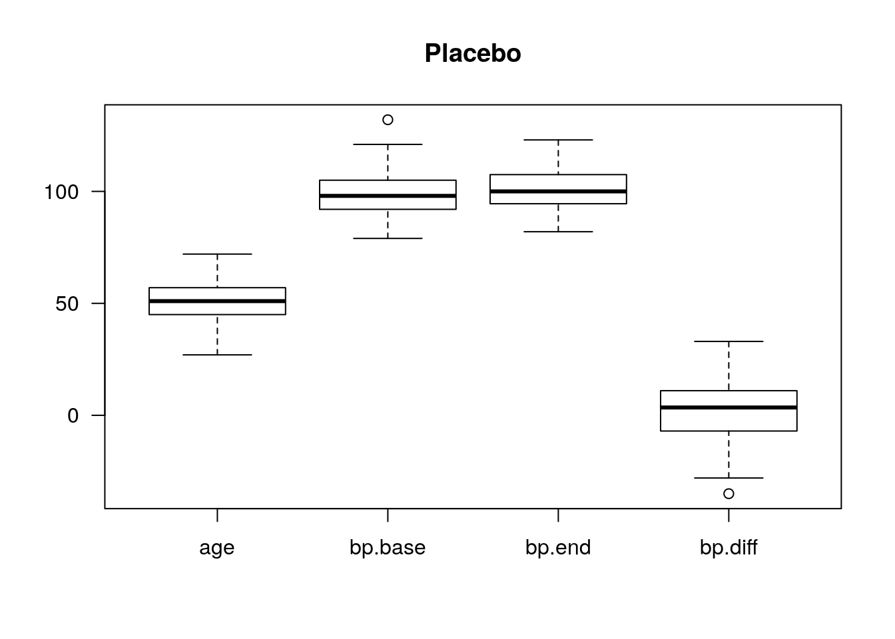
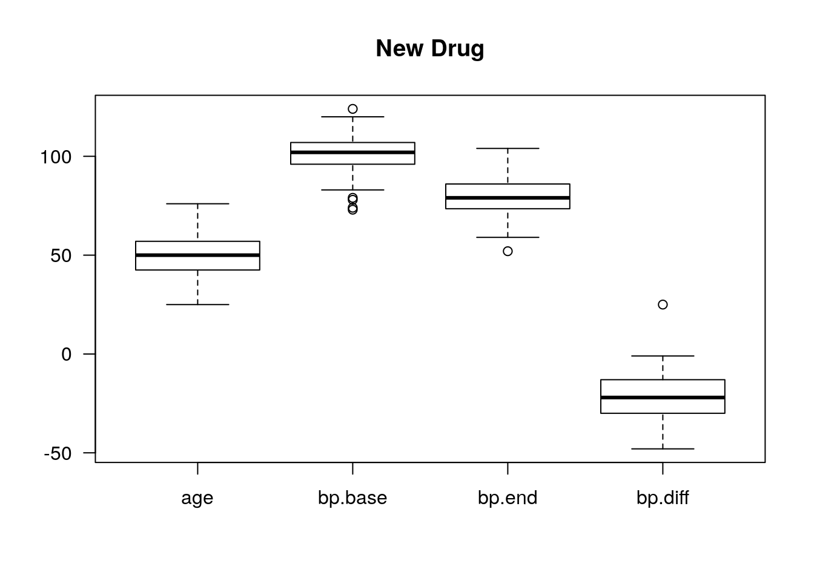
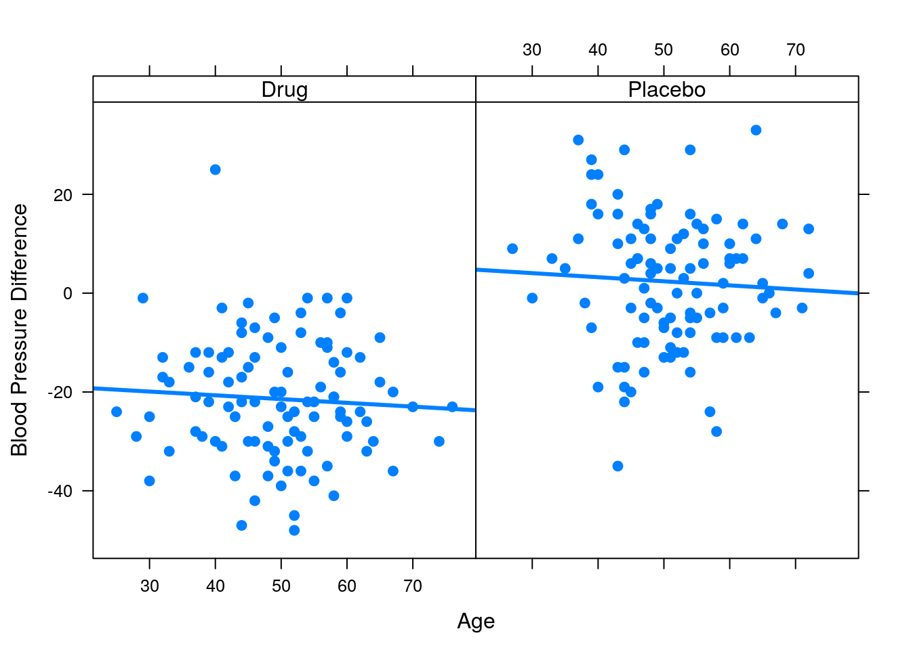
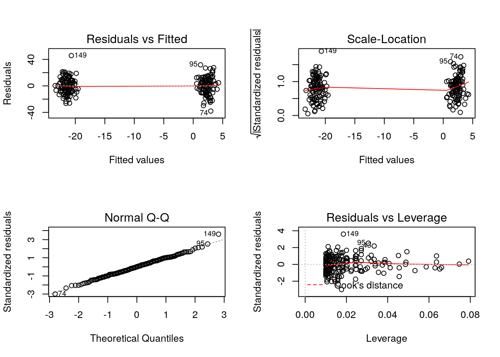

Section 2 Analysis of Clinical Trials with R
2.1 Why use R in Clinical Trials analysis when there is other software avilable.
R is an open source software widely accepted as the lingua franca of statistics. Interestingly it’s use in clinical research has not happened at the same pace as in other disciplines. The field has gravitated mostly to propietary software like SAS or SPSS to name a few.
R offers very powerful analytical tools in a modular format (which keep the software as light as possible for the computer performing the analysis) while costing no money to be able to use it (most of the analytical software used in clinical research is proprietary and licences are very expensive). It can also be adjusted to specific needs through the generation of new functions and analytical pipelines.
One of the main concerns with clinical trials is the regulatory compliance of the software to FDA rules. The R Foundation for Statistical Computing published a document offeing guidance in this specific topic, the document is updated regularly to stay relevant in the clinical trials environment.
2.2 Simulated Clinical Trial
The following is a simulation of a clinical trial to exemplify the use of R in this context. The simulation will be of a simple two-arm clinical trial to compare a new drug to placebo on reducing diastolic blood pressure in hypertensive adult men.
We will assume that an appropriate power analysis indicated the sample size required to detect a specified treatment difference is \(n=100\) for both treatment groups. For these \(n\) participants, we record their age and measure baeline diastolic blood pressure just before randomization.
The new drug and placebo are administered and blood pressure is measured and recorded periodically thereafter, including at the end of the trial. Then the change in blood pressure between the endpoint and baselina may be calculated and analyzed as an index of the antihypertensive efficacy of the new drug.
2.2.1 Simulating Data
We are assuming that baseline diastolic blood pressures for the 200 recruited participants are normally distributed with a mean \(\mu = 100mmHg\) and a standard deviation \(\sigma = 10mmHg\). Regarding age we are assuming a normally distribution with mean \(\mu = 50\) years, with a standard deviation \(\sigma = 10\) years. We are also assuming that the new drug will decrease diastolic blood pressure by 20 mmHg (\(\mu = 20\)):
n = 100
mu = 100
sd = 10
mu.d = 20
age.mu = 50
age.sd = 102.2.1.1 Placebo simulations
# setting seed for random number generation
set.seed(123)
age = rnorm(n, age.mu, age.sd)
bp.base = rnorm(n,mu,sd)
bp.end = rnorm(n,mu,sd)
# take the difference between endpoint and baseline
bp.diff = bp.end-bp.base
# put the data together using "cbind" to column-bind
dat4placebo = round(cbind(age,bp.base,bp.end,bp.diff))
head(dat4placebo)## age bp.base bp.end bp.diff
## [1,] 44 93 122 29
## [2,] 48 103 113 11
## [3,] 66 98 97 0
## [4,] 51 97 105 9
## [5,] 51 90 96 5
## [6,] 67 100 95 -4In the previous table, the results of the first 6 (out of 100 from the placebo subset) simulated participants are shown.
2.2.1.2 New drug simulations
age = rnorm(n, age.mu, age.sd)
bp.base = rnorm(n,mu,sd)
bp.end = rnorm(n,mu-mu.d,sd)
bp.diff = bp.end-bp.base
dat4drug = round(cbind(age,bp.base,bp.end,bp.diff))
head(dat4drug)## age bp.base bp.end bp.diff
## [1,] 43 99 74 -25
## [2,] 42 88 70 -18
## [3,] 41 94 90 -3
## [4,] 39 100 88 -12
## [5,] 46 107 65 -42
## [6,] 53 83 79 -42.2.1.3 Integration of dataset
Now to have all results in one structure we will stack the two data sets and add one more variable (column) to the resulting dataset, this new variable will be a nominal value indicating if the patient belongs to the placebo or new drug subgroups.
# dataframe holding all data
dat = data.frame(rbind(dat4placebo,dat4drug))
# "trt" as a factor for treatment.
dat$trt = as.factor(rep(c("Placebo", "Drug"), each=n))
head(dat)## age bp.base bp.end bp.diff trt
## 1 44 93 122 29 Placebo
## 2 48 103 113 11 Placebo
## 3 66 98 97 0 Placebo
## 4 51 97 105 9 Placebo
## 5 51 90 96 5 Placebo
## 6 67 100 95 -4 Placebo2.2.2 Visualization of data
2.2.2.1 Basic graphs
boxplot(dat4placebo, las=1, main="Placebo")
boxplot(dat4drug, las=1, main="New Drug")
From these graphs we can see that the data generated is indeed normally distributed.
2.2.2.2 More detailed graphs
Before moving to inferential statistical tools, a more detailed visualization is recomended, to undestand a bit more the dynamnics of the data.
#load the lattice library
library(lattice)
# call xyplot function and print it
print(xyplot(bp.diff~age|trt, data=dat,xlab="Age",
strip=strip.custom(bg="white"),
ylab="Blood Pressure Difference",lwd=3,cex=1.3,pch=20,
type=c("p", "r")))
When dealing with blood pressure (BP), there is a reasonable argument to link higher values of BP results with older participants, given the pathophysiology of blood preassure and the stiffening of arteries in older patients. The previous graph clarifies that, in this case, BP results are not being affected by age. Nevertheless, it seems the new drug did lower blood pressur in those who took it.
2.2.3 Inferential statistics
After getting acquainted with the data through visualizations, a numerical analysis can be preformed. Staying with a linear approach, we start with a general statistical model as follows:
\[y=\beta_0 + \beta_1 \times trt + \beta_2 \times age + \beta_3age \times trt + \epsilon\]
Where:
- \(y=\) change in blood pressure.
- \(\beta_0, \beta_1, \beta_2, \beta_3=\) parameters.
- \(\epsilon =\) error, assumed to be independently identically distributed.
lm1 = lm(bp.diff~trt*age, data=dat)
summary(lm1)##
## Call:
## lm(formula = bp.diff ~ trt * age, data = dat)
##
## Residuals:
## Min 1Q Median 3Q Max
## -37.975 -8.883 0.037 8.488 45.678
##
## Coefficients:
## Estimate Std. Error t value Pr(>|t|)
## (Intercept) -17.627094 6.242472 -2.824 0.00524 **
## trtPlacebo 24.153635 9.586926 2.519 0.01255 *
## age -0.076284 0.123209 -0.619 0.53654
## trtPlacebo:age -0.006311 0.186973 -0.034 0.97311
## ---
## Signif. codes: 0 '***' 0.001 '**' 0.01 '*' 0.05 '.' 0.1 ' ' 1
##
## Residual standard error: 12.8 on 196 degrees of freedom
## Multiple R-squared: 0.4684, Adjusted R-squared: 0.4602
## F-statistic: 57.56 on 3 and 196 DF, p-value: < 2.2e-16Making the table easier to the eye:

2.2.3.1 Diagnostics for model assumptions
layout(matrix(1:4, nrow=2))
plot(lm1)